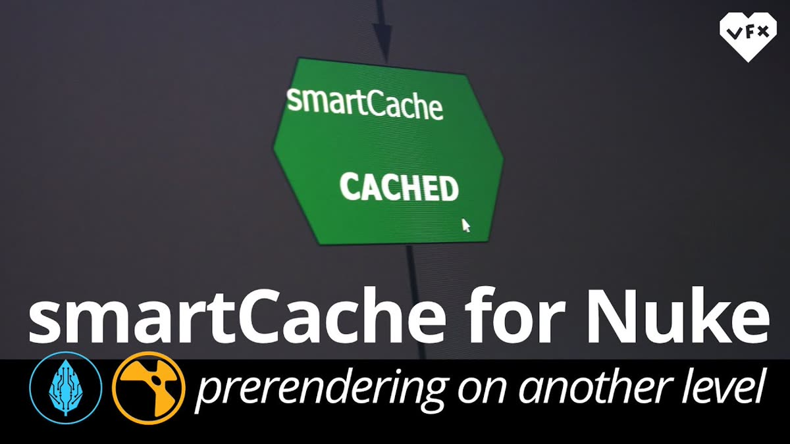

Merge VFX&CG
CG / VFX KNOWLEDGE BASE
記事・リンクを検索
背景制作まとめ
Houdiniまとめ
USD資料まとめ
海外/VFX情報サイト
Tipsまとめ
記事・リンクを検索
⌘K
トップ
/
Pipeline/Plugin/Tool
/
smartCache — Nukeのプリレンダーを扱うCRAGLのツール
PIPELINE/PLUGIN/TOOL
smartCache — Nukeのプリレンダーを扱うCRAGLのツール
2026-02-10
言語: 英語
形式: プラグイン・ツール

CRAGL VFX toolsのNuke用プラグイン「smartCache」を、3分半で概観する紹介動画。
URL
https://www.youtube.com/watch?v=ossXICvL-G0
サイトを見る
関連ポスト
同じタグを持つポストです。
Pipeline/Plugin/Tool
VFX SHOWDOWN — Nukeの無料GizmoとGradeノードの基礎2本
Nuke
Compositing
Tools
Tutorial
Alex Villabon — Nukeの作業効率を上げる解説動画2本
Nuke
Compositing
Optimization
Tutorial
Flares OFX — Nukeで使えるレンズフレアプラグインの使い方
Nuke
Compositing
VFX
Tutorial
Solso4D — NukeとDaVinciを軸にした作品ブレイクダウン2本
Nuke
Compositing
V-Ray
Tutorial
Nuke — カーブとHueで作る水中ルックのデプス処理
Nuke
Compositing
Color
Tutorial
Nuke — カメラトラッキングの基礎
Nuke
Compositing
VFX
Tutorial
Nuke — ノイズと星雲の作り方
Nuke
Compositing
VFX
Tips
【無料】ActionVFX — カメラシェイク素材を提供
Nuke
VFX
Compositing
Pipeline/Plugin/Tool
Blender — 便利ツール2種、Fast 2D Remesh Tool/Spline Mesh Tool
Blender
Tools
Article
LEDウォールはなぜグリーンバックを置き換えられなかったのか
VFX
Industry
Compositing
Tutorial
Double Jump Academyより — ILM/DNEG出身Steven Corman氏の新チュートリアル『Advanced Matte Painting』
Houdini
Maya
Gaea
Tutorial
COLMAPによる完全自動の3Dカメラトラッキング
Blender
VFX
Photogrammetry
さらに見る